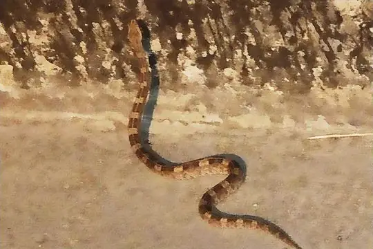
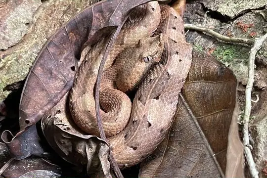

Porthidium
The genus Porthidium (family Viperidae) has 9 living species in SnakeList (all venomous), recorded in 10 countries.
- 9living species
- 9venomous
- 10countries
About the genus
A genus of the family Viperidae (vipers and pit vipers).
Species
Showing 9 species
 Dunn's Hognose ViperPorthidium dunni
Dunn's Hognose ViperPorthidium dunni Hognosed Pit ViperPorthidium nasutum
Hognosed Pit ViperPorthidium nasutum Lansberg's Hognosed Pit ViperPorthidium lansbergii
Lansberg's Hognosed Pit ViperPorthidium lansbergii
Manabi Hognose PitviperPorthidium arcosae Slender Hognose ViperPorthidium ophryomegas
Slender Hognose ViperPorthidium ophryomegas Ujarran Hognose ViperPorthidium volcanicum
Ujarran Hognose ViperPorthidium volcanicum Western Hognose ViperPorthidium hespere
Western Hognose ViperPorthidium hespere
White-tailed Hognose PitviperPorthidium porrasi Yucatán Hognose ViperPorthidium yucatanicum
Yucatán Hognose ViperPorthidium yucatanicum
No snakes in Porthidium match.
About the genus Porthidium
Compare its species
Its living species side by side. Lengths come only from SnakeList’s reviewed, sourced accounts; the others are left blank rather than guessed.
| Species | Venom | Recorded in | Adult length (reviewed accounts) |
|---|---|---|---|
| Dunn's Hognose Viper Porthidium dunni | Venomous | 1 country (North America) | No reviewed account yet |
| Hognosed Pit Viper Porthidium nasutum | Venomous | 9 countries (North America, South America) | No reviewed account yet |
| Lansberg's Hognosed Pit Viper Porthidium lansbergii | Venomous | 2 countries (North America, South America) | No reviewed account yet |
| Manabi Hognose Pitviper Porthidium arcosae | Venomous | 1 country (South America) | No reviewed account yet |
| Slender Hognose Viper Porthidium ophryomegas | Venomous | 6 countries (North America) | No reviewed account yet |
| Ujarran Hognose Viper Porthidium volcanicum | Venomous | 2 countries (North America) | No reviewed account yet |
| Western Hognose Viper Porthidium hespere | Venomous | 1 country (North America) | No reviewed account yet |
| White-tailed Hognose Pitviper Porthidium porrasi | Venomous | 1 country (North America) | No reviewed account yet |
| Yucatán Hognose Viper Porthidium yucatanicum | Venomous | 2 countries (North America) | No reviewed account yet |